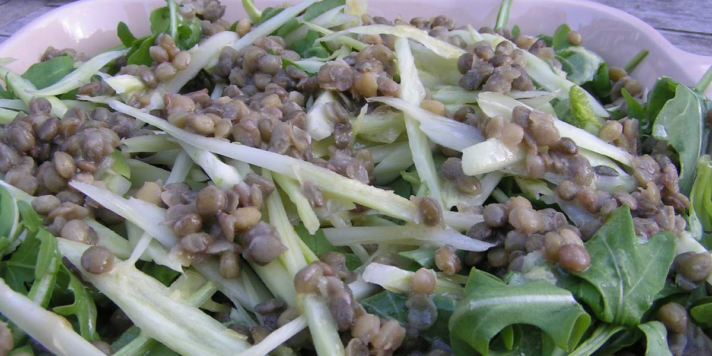

Rocket, Fennel & Puy Lentil
Recipe Specification
Ingredients List
| Ingredients | Quantity |
|---|---|
| Puy Lentil | 250g |
| Bay Leaf | 2 leaves |
| White Onions | 1x1 |
| Olive Oil | 30ml |
| Wholegrain Mustard | 1 tsp |
| Fennel Bulbs | 2x1 |
| Rocket | 150g |
| Lemon | 1x1 |
| Salt & Pepper | To Taste |
Yield: 4-6 portions
Preparation
- Soak puy lentils for 2-3 hours in cold water.
- Peel and roughly slice white onion.
- Finely slice fennel bulbs on a mandolin.
- Wash and spin dry rocket.
- Zest lemon.
- Mix olive oil, lemon zest and wholegrain mustard before seasoning with salt and pepper.
Cooking Instructions
- Place a saucepan on a medium/high heat and add puy lentils, onions, bay leaves, 1 tsp of salt and 400ml of water. Bring to the boil and reduce to the simmer for 20 minutes.
- Once puy lentil is cooked, remove from heat, drain and run under cold water in a colander. Discard onions and bay leaves.
- Mix lentils, rocket, fennel and dressing before serving.

Serving Suggestions
Serve alongside a burger.
Storing instructions
Store in an airtight contain before placing in the fridge. Consume with 4 days of making.